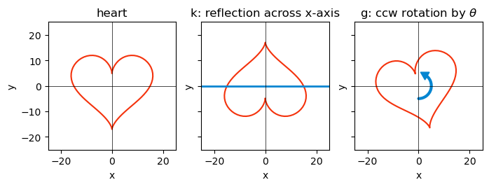
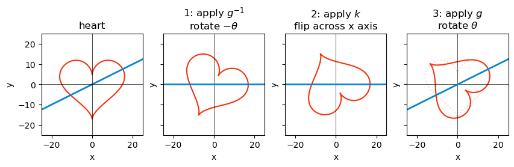
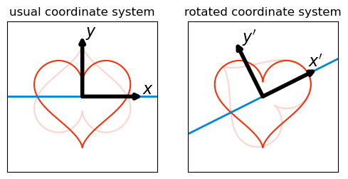

10 basic properties
10.1 \det(\exp(A))=\exp(\text{tr}(A))
We wish to prove that for a diagonalizable matrix A, the determinant of its exponential equals the exponential of its trace:
\det(\exp(A)) = \exp(\text{tr}(A))
We start with the definition of the exponential function for a scalar x:
\exp(x) = \sum_{n=0}^{\infty}\frac{x^n}{n!} = 1 + x + \frac{x^2}{2!} + \frac{x^3}{3!} + \ldots
We will extend this definition to include the exponential of a matrix A:
\exp(A) = \sum_{n=0}^{\infty}\frac{A^n}{n!} = 1 + A + \frac{A^2}{2!} + \frac{A^3}{3!} + \ldots
If A is diagonalizable:
A = P D P^{-1},
where P is a matrix whose column vectors are the eigenvectors of A, and D is a diagonal matrix whose diagonal elements are the corresponding eigenvalues.
Let’s use the equation above in the definition of the exponential:
\begin{align*} \exp(A) &= \exp\left(P D P^{-1}\right) \\ &= 1 + P D P^{-1} + \frac{1}{2!}\left(P D \cancel{P^{-1}}\right)\left(\cancel{P} D P^{-1}\right) + \ldots \\ &= P D^2 P^{-1} + P D P^{-1} + \frac{1}{2!}P D^2 P^{-1} + \frac{1}{3!}P D^3 P^{-1} + \ldots \end{align*}
If we left-multiply the last expression by P^{-1} and then right-multiply it by P, we get
P^{-1}\exp(A)P = 1 + D + \frac{D^2}{2!} + \frac{D^3}{3!} = \exp(D)
and then reversing the left- and right-multiplications we finally have:
\exp(A) = P \exp(D) P^{-1}.
We are almost there! Let’s take the determinant of both sides. In the step below we will use the following property of determinants: \det(XY)=\det(X)\det(Y). This can be untuitively justified by interpreting the determinant as the rescaling of a parallelogram defined by the linear transformation of a matrix. The rescaled parallelogram after the operation XY is scaled first by Y and then by X, giving the expression we need. Continuing:
\begin{align*} \det(\exp(A)) &= \det(P \exp(D) P^{-1}) \\ &= \det(P)\det(\exp(D))\det(P^{-1}) \\ &= \cancel{\det(P)}\det(\exp(D))\cancel{\det(P^{-1})} \\ &= e^{d_1}e^{d_2}e^{d_3}\ldots \\ &= \exp(d_1+d_2+d_3+\ldots) \\ &= \exp(\text{tr}(D)) \end{align*}
Now, all we have to do is to replace the trace of D by the trace of A. Using the property of the trace of a product: \text{tr}(XY)=\text{tr}(YX):
\text{tr}(A) = \text{tr}(P D P^{-1}) = \text{tr}(\cancel{P^{-1}P} D) = \text{tr}(D).
Finally:
\det(\exp(A)) = \exp(\text{tr}(A))
and that concludes the proof. \blacksquare
10.2 conjugation
I’d like to thank Adam Frank for his blog post on axiomtutor.com for helping me grasp intuitively the concept of conjugation.
Conjugation represents the idea that one operation can be seen from two different points of view. I’ll start with a concrete example.
Say that k represents a reflection across the x-axis, and g represents a counter-clockwise rotation by an arbitrary angle \theta. See below these two operations applied on a heart shape.
define useful functions
def drawCirc(ax,radius,centX,centY,angle_,theta2_,color_='black',linewidth=3):
#========Line
arc = Arc([centX,centY],radius,radius,angle=angle_,
theta1=0,theta2=theta2_,capstyle='round',linestyle='-',lw=linewidth,color=color_)
ax.add_patch(arc)
#========Create the arrow head
endX=centX+(radius/2)*np.cos(rad(theta2_+angle_)) #Do trig to determine end position
endY=centY+(radius/2)*np.sin(rad(theta2_+angle_))
ax.add_patch(
RegularPolygon(
(endX, endY),
numVertices=3,
radius=radius/5,
orientation=rad(angle_ + theta2_),
color=color_
)
)define transformations
red = 'xkcd:vermillion'
blue = 'xkcd:cerulean'
t = np.linspace(0, 2*np.pi, 100)
x = 16* (np.sin(t)) ** 3
y = 13* np.cos(t) - 5 * np.cos(2*t) - 2 * np.cos(3*t) - np.cos(4*t)
heart = np.array([x, y])
flip_x = np.array([[1, 0], [0, -1]])
def rotate(theta):
return np.array([[np.cos(theta), -np.sin(theta)], [np.sin(theta), np.cos(theta)]])
heart_x = flip_x @ heart
theta = np.atan(0.5)
heart_minus_theta = rotate(-theta) @ heart
heart_minus_theta_flipped = flip_x @ heart_minus_theta
heart_minus_theta_flipped_plus_theta = rotate(theta) @ heart_minus_theta_flipped
x_oblique_axis = np.array([-25, 25])
y_oblique_axis = 0.5 * x_oblique_axis
oblique_axis = np.array([x_oblique_axis, y_oblique_axis])
oblique_axis_minus_theta = rotate(-theta) @ oblique_axis
oblique_axis_minus_theta_plus_theta = rotate(theta) @ oblique_axis_minus_thetaplot k and g applied to a heart shape
fig, ax = plt.subplots(1, 3, sharey=True, figsize=(8, 4))
ax[0].plot(heart[0], heart[1], color=red)
ax[0].axhline(0, color='black', lw=0.5)
ax[0].axvline(0, color='black', lw=0.5)
ax[0].set_aspect('equal')
ax[0].set(xlabel='x', ylabel='y', title='heart', xlim=x_oblique_axis, ylim=x_oblique_axis)
ax[1].plot(heart_x[0], heart_x[1], color=red)
ax[1].axhline(0, color=blue, lw=2)
ax[1].axvline(0, color='black', lw=0.5)
ax[1].set_aspect('equal')
ax[1].set(xlabel='x', ylabel='y', title='k: reflection across x-axis', xlim=x_oblique_axis, ylim=x_oblique_axis)
heart_15 = rotate(np.pi/12) @ heart
ax[2].plot(heart_15[0], heart_15[1], color=red)
ax[2].axhline(0, color='black', lw=0.5)
ax[2].axvline(0, color='black', lw=0.5)
ax[2].set_aspect('equal')
ax[2].set(xlabel='x', ylabel='y', title=r'g: ccw rotation by $\theta$', xlim=x_oblique_axis, ylim=x_oblique_axis)
drawCirc(ax[2],radius=10,centX=0,centY=0,angle_=270,theta2_=150, color_=blue);
Because we are dealing with operations on a 2d plane, both k and g can be represented as 2\times2 matrices:
k = \begin{pmatrix} 1 & 0 \\ 0 & -1 \end{pmatrix} \quad\text{and}\quad g = \begin{pmatrix} \cos(\theta) & -\sin(\theta) \\ \sin(\theta) & \cos(\theta) \end{pmatrix}
What if we want to make a reflection of the heart shape across a different axis? In the graph below, the first panel on the left shows a reflection axis that is rotated by an angle \theta from the x-axis. With a little ingenuity, I don’t need to define a new reflection operation. Instead, I can use the existing reflection operation k and the rotation operation g to achieve the same effect.
conjugation of k and g applied to a heart shape
fig, ax = plt.subplots(1, 4, sharey=True, figsize=(10, 3))
ax[0].plot(heart[0], heart[1], color=red)
ax[0].plot(oblique_axis[0], oblique_axis[1], color=blue, lw=2)
ax[0].axhline(0, color='black', lw=0.5)
ax[0].axvline(0, color='black', lw=0.5)
ax[0].set_aspect('equal')
ax[0].set(xlabel='x', ylabel='y', title='heart', xlim=x_oblique_axis, ylim=x_oblique_axis)
ax[1].plot(heart_minus_theta[0], heart_minus_theta[1], color=red)
ax[1].axhline(0, color='black', lw=0.5)
ax[1].axvline(0, color='black', lw=0.5)
ax[1].plot(oblique_axis_minus_theta[0], oblique_axis_minus_theta[1], color=blue, lw=2)
ax[1].set_aspect('equal')
ax[1].set(xlabel='x', ylabel='y', title=r'1: apply $g^{-1}$' + "\n" + r'rotate $-\theta$', xlim=x_oblique_axis, ylim=x_oblique_axis)
ax[2].plot(heart_minus_theta_flipped[0], heart_minus_theta_flipped[1], color=red)
ax[2].axhline(0, color='black', lw=0.5)
ax[2].axvline(0, color='black', lw=0.5)
ax[2].plot(oblique_axis_minus_theta[0], oblique_axis_minus_theta[1], color=blue, lw=2)
ax[2].set(xlabel='x', ylabel='y', title=r'2: apply $k$' + "\n" + r'flip across x axis', xlim=x_oblique_axis, ylim=x_oblique_axis)
ax[2].set_aspect('equal')
ax[3].plot(heart_minus_theta_flipped_plus_theta[0], heart_minus_theta_flipped_plus_theta[1], color=red)
ax[3].plot(heart[0], heart[1], color=red, alpha=0.2, ls=":")
ax[3].axhline(0, color='black', lw=0.5)
ax[3].axvline(0, color='black', lw=0.5)
ax[3].plot(oblique_axis_minus_theta_plus_theta[0], oblique_axis_minus_theta_plus_theta[1], color=blue, lw=2)
ax[3].set(xlabel='x', ylabel='y', title=r'3: apply $g$' + "\n" + r'rotate $\theta$', xlim=x_oblique_axis, ylim=x_oblique_axis)
ax[3].set_aspect('equal');
- We rotate the whole plane by an angle -\theta, which rotates the reflection axis (blue) to coincide with the x-axis (2nd panel). This is equivalent to applying the inverse of the rotation operation g^{-1} to the heart shape.
- Then we reflect the (rotated) heart shape across the x-axis (3rd panel). This is simply applying the reflection operation k to the rotated heart shape.
- Finally, we rotate the whole plane back by an angle \theta (4th panel). This is equivalent to applying the rotation operation g to the reflected heart shape. You can check the result by comparing the solid red curve with the original heart shape shown with a dotted line.
To sum up: apply g^{-1}, then k, then g. Let’s call the resulting operation k', which is said to be a conjugate of k by g:
k' = g k g^{-1}.
Now let’s see the same thing from a slightly different perspective. If k means reflecting across the x-axis, then k' can also be interpreted as reflecting across the x-axis, but in a rotated coordinate system. See below, the usual axes x and y are used in the panel on the left, while a rotated coordinate system by \theta is used in the panel on the right.
conjugation of k and g applied to a heart shape
fig, ax = plt.subplots(1, 2, sharey=True, figsize=(6, 3))
ax[0].plot(heart[0], heart[1], color=red)
ax[0].plot(heart_x[0], heart_x[1], color=red, alpha=0.2)
ax[0].axhline(0, color=blue, lw=2)
ax[0].set_aspect('equal')
ax[0].set(title='usual coordinate system', xlim=x_oblique_axis, ylim=x_oblique_axis, xticks=[], yticks=[])
ax[0].annotate("", xy=(20, 0), xytext=(0, 0), fontsize=10, color="black", arrowprops=dict(arrowstyle="->", facecolor='black', lw=4, shrinkA=0, shrinkB=0),)
ax[0].annotate("", xy=(0, 20), xytext=(0, 0), fontsize=10, color="black", arrowprops=dict(arrowstyle="->", facecolor='black', lw=4, shrinkA=0, shrinkB=0),)
ax[0].text(20, 1, r'$x$', fontsize=16, color="black")
ax[0].text(1, 20, r'$y$', fontsize=16, color="black")
ex = np.array([[20,0]])
x_prime = rotate(theta) @ ex.T
why = np.array([[0,20]])
y_prime = rotate(theta) @ why.T
ax[1].plot(heart[0], heart[1], color=red)
ax[1].plot(heart_minus_theta_flipped_plus_theta[0], heart_minus_theta_flipped_plus_theta[1], color=red, alpha=0.2)
ax[1].plot(oblique_axis[0], oblique_axis[1], color=blue, lw=2)
ax[1].set_aspect('equal')
ax[1].set(title='rotated coordinate system', xlim=x_oblique_axis, ylim=x_oblique_axis, xticks=[], yticks=[])
ax[1].annotate("", xy=x_prime, xytext=(0, 0), fontsize=10, color="black", arrowprops=dict(arrowstyle="->", facecolor='black', lw=4, shrinkA=0, shrinkB=0),)
ax[1].annotate("", xy=y_prime, xytext=(0, 0), fontsize=10, color="black", arrowprops=dict(arrowstyle="->", facecolor='black', lw=4, shrinkA=0, shrinkB=0),)
ax[1].text(15, 10, r"$x'$", fontsize=16, color="black")
ax[1].text(-7, 18, r"$y'$", fontsize=16, color="black");
The rotated coordinate system is defined by unit vectors x' and y' which are exactly the column vectors of the rotation matrix g!
So, another way to interpret the conjugation k' = g k g^{-1} is that it represents the same operation k (reflection across the x-axis), but in a rotated coordinate system defined by g.
The idea of conjugation is very general and can be applied to any operation, not just reflections. The one requirement is that the operation g must be invertible, so that we can apply g^{-1} to reverse the effect of g.
The underlying principle behind this generality is the “change-of-basis” formula. If M is the matrix of an operation k in a given basis, and g is an invertible matrix whose column vectors define a new basis, then
g^{-1}Mg
is the matrix of the same operator written in the basis whose vectors are the columns of g.
Conjugation by g preserves many properties of the operation k.
- The determinant of k' is the same as the determinant of k.
- The trace of k' is the same as the trace of k.
- The eigenvalues of k' are the same as the eigenvalues of k. (The eigenvectors are rotated by g).
- The conjugation of a bracket of two operations is the same as the bracket of the conjugated operations: \begin{align*} [k, l]' &= g [k, l] g^{-1} \\ &= g (kl - lk) g^{-1} \\ &= gklg^{-1} - glkg^{-1} \\ &= gkg^{-1}glg^{-1} - glg^{-1}gkg^{-1} \\ &= (gkg^{-1})(glg^{-1}) - (glg^{-1})(gkg^{-1}) \\ &= [gkg^{-1}, glg^{-1}] \\ &= [k', l'] \end{align*}